设计模式笔记
Table of Contents
1 OO基本原则
1.1 单一职责原则(SRP)
1.2 开放封闭原则
1.3 依赖倒置原则
1.4 子类替换原则
1.5 接口隔离原则
2 策略模式
2.1 概述
定义了算法族，分别封装起来，让它们之间可以互相替换，此模式让算法的变化独立于使用算法的客户。
2.2 适用性
- 许多 相关 的类仅仅是行为有异
- 需要使用一个算法的不同变体
- 使算法使用的数据结构不暴露于客户
- 一个类定义了多种行为，且这些行为在类中是以多个条件语句的形式出现的
2.3 结构
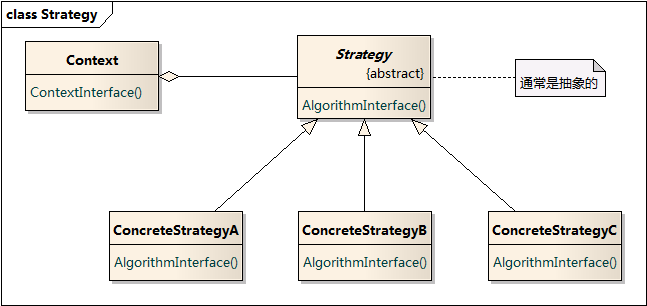
2.4 优点
- 定义了一组可供重用的算法，继承自Strategy基类，有助于将共同内容放置于基类
- 替代继承实现方法，不用硬编码至Context中
- 消除了一些条件语句
- 客户代码可以动态的选择具体算法
2.5 缺点
- 客户代码必须了解到具体算法之间的区别（增加耦合）
- Gof建议：仅当不同行为变体是与客户相关的行为时，才需要使用Strategy模式
- Strategy和Context之间的通信开销
- 各具体算法所需要的参数不一样，但是接口共享。会导致需要额外增加两边接口，导致这两个类更紧密的耦合
- 增加了对象的数目
- 参考Flyweight模式
2.6 实现
2.6.1 定义Context和Strategy的接口
- 必须使得ConcreteStrategy和Context类能够获取对方的任何数据
- 方法1：Context将各算法需要的参数传递给Strategy
好处：Strategy对Context解耦(Strategy不需要知道Context的存在)
缺点：Context可能发送一些具体算法不需要的冗余数据
- 方法2：Context自身作为一个参数传递给Strategy，由Strateg去显式调用Get获取数据
缺点：Context必须更精确的定义和分出多个Get接口，Strategy跟Context之间耦合更紧密。(修改时，会同时需要修改这两个类)
- 方法1：Context将各算法需要的参数传递给Strategy
2.6.2 将Strategy作为模板参数
- 优点：
- 不再需要Stratgy抽象基类
- 将Strategy实例和模板方法进行了静态绑定，提高了运行效率
- 缺点：
- 不能在运行时改变行为
2.6.3 使Strategy成为可选的
Context执行缺省行为，只有当用户不喜欢缺省行为时，才选择可选的Strategy。
2.7 相关模式
3 状态模式
3.1 概述
允许对象在内部状态改变时改变它的行为，对象看起来好像修改了它的类。
3.2 适用性
- 一个对象的行为取决于它的状态，并且需要在 运行时 根据它的状态改变它的行为
- 一个操作中含有 庞大 的分支条件语句，且这些分支依赖于该对象的状态
3.3 结构

3.4 优点
- 将与特定状态相关的行为局部化，把不同状态的行为分割开来
- 通过定义新的子类，很容易增加新的状态和转化
- 它使得状态转换显式化
- 当一个对象某个成员变量来定义状态时，其状态仅表现为对变量赋值，不够明确。
- 从Context的角度看，状态转换是原子的——只需重新绑定一个State对象变量。
- State对象可以被多个Context对象共享()
- 条件：状态 对象 不能持有自己的状态实例。需要将状态实例指定到一个静态变量中(即实现单件模式)
- 如果状态需要利用Context中的数据或方法，必须在每个接口方法内传入Context的引用
这样可实现没有内部状态，只有行为的轻量级对象1
3.5 缺点
- 类的数目增加了，看起来不够紧凑
真正重要的是暴露给客户的类数目。如果状态有很多，这样分布更好，否则需要庞大的条件语句。
3.6 实现
3.6.1 谁定义状态转换
- State模式不指定哪个参与者定义状态转换准则。如果该准则固定，可在Context中完全实现。
- 如果让State子类自身指定他们的后继状态以及何时进行转换，通常更灵活更合适
这需要Context增加一个接口，让State子类对象显示地设定Context当前状态
缺点：产生了子类之间的实现依赖
3.6.2 使用表驱动方法替代
将条件代码(State模式下的虚函数)映射为一张查找表。
- 缺点：对表的查找通常不如(虚)函数调用效率高。
总结：表驱动着重于定义状态转换；State模式则是针对状态相关的行为进行建模。
3.6.3 创建和销毁State对象
- 面临权衡：(1)需要时创建；(2)始终置于内存
- 将要进入的状态，在运行时是不可知的，且上下文不经常改变状态时，选择1。
- 另外，当State对象存储大量的信息时，使用1
- 当状态频繁变化时，第2种方法更好。Context必须保存对所有可能会进入的那些状态的引用。
3.7 相关模式
4 观察者模式
4.1 概述
定义对象之间一种一对多的依赖，当一个对象状态发生变化时，所有依赖于它的对象都得到通知。
4.2 适用性
以下任一情况可使用Observer模式
- 当一个抽象模型有两个方面，一个方面依赖于另一方面，将两者独立封装起来以便修改和复用。
- 当一个对象的改变需要同时改变其他对象，而不知道具体有多少对象有待改变。
- 当一个对象必须通知其他对象，而又不能知道其他对象是谁的情况下。（即不希望是紧耦合）
4.3 结构

流程图

4.4 优点
- Subject和Observer间的抽象耦合(都只了解对方的接口)
因为是非紧密耦合的，Subject和Observer可以来自于系统中的不同的抽象层次
低层次Subject一样可以通知高层次Observer，使用该模式不会破坏系统层次
这就是抽象Subject和Observer的作用。
- 支持广播通信
是否要加入广播列表取决于观察者
4.5 缺点
- 来自某一观察者的意外更新
某个观察者更新了主题的状态，导致其他观察者也发生了改变。
如果更新准则定义或维护不当，常常会引起错误的更新。
4.6 实现
4.6.1 创建主题与其观察者之间的映射
- 主题跟踪观察者最简单的方式是保存观察者们的引用
- 当主题很多，观察者较少时，以上方法空间代价可能很高(不是太大的问题)
解决方案，拿时间换空间，维护一份主题和观察者之间的映射表。
该方案增加了访问观察者的开销(每次访问都需要读映射表)。
4.6.2 观察多个主题
某些情况下，观察多个主题是有意义的，例如：一个表格对象依赖于多个数据源。
需要拓展Update接口使观察者知道是哪一个主题送来的。
主题可以简单的将自己作为观察者Update接口的参数，让观察者知道应去检查哪一个目标。
4.6.3 谁触发更新
Notify谁来调用？
- 由主题对象的状态设定操作自动调用。
- 优点：客户不需要调用Notify。
- 缺点：多个连续的设定操作会产生多次连续更新，可能效率较低。(关键还是要看需求：在更新状态的时候是否需要通知)
- 客户负责调用Notify
- 优点：客户可以在一系列状态设定操作之后一次性通知更新。
- 缺点：给客户增加了触发更新的责任。客户忘记的话，容易出错。
4.6.4 避免悬挂引用
当删除一个主题时，应注意不要在其观察者中遗留对该目标的悬挂引用。
方法：删除时，通知观察者将对该主题的引用复位(=NULL)
4.6.5 在发出通知前，确保主题的状态自身是一致的(很重要)
void MySubject::Operation (int newValue) { BaseClassSubject::Operation(newValue);//先触发了通知 _myInstVar += newValue;//后修改自身状态 }
可以使用模板方法发送通知来避免这种错误。(模板方法定死修改状态和触发通知的顺序)
4.6.6 推拉模型的取舍
- 推模型(大多数情况使用它)
- Update参数传入信息可能极大，并不是所有观察者都需要。
- 假定了主题知道一些观察者所需要的信息。可能导致观察者接口难以复用，主题对观察者所需要的信息的假定，并不总是正确。
- 拉模型
- 观察者自己向主题获取信息。
- 强调主题并不知道它的观察者。
- 缺点：可能效率较差，因为观察者有时需要自己去确认什么改变了。
- 缺点2：可能需要调用多个接口以搜集全观察者自己需要的状态，比较麻烦。(耦合度增高)
4.6.7 只关注感兴趣的改变
拓展主题的注册接口，加入interest参数
//主题 void Subject::Attach(Observer*, Aspect& interest); //观察者 void Observer::Update(Subject*, Aspect& interest);
4.6.8 封装复杂的更新语义(ChangeManager)
当主题与观察者之间的依赖关系特别复杂时，需要一个对象来维护这些关系。
这样的对象成为ChangeManager。
目的：尽量减少观察者反映其主题的状态变化所需的工作量。
例子：如果一操作涉及到几个主题，就必须保证所有的主题都更改完了，再
一并通知它们的观察者。
三个责任 ：
- 管理主题与观察者之间的映射表，提供接口来维护这个映射表。
- 它定义一个特定的更新策略。
- 根据一个主题的请求，更新所有它的观察者。
4.6.9 结合主题类和观察者类（针对不支持多重继承语言）
对不支持多重继承或接口的语言(SmallTalk)，不单独定义Subject和Observer。
而将他们的接口结合到一个类中。
5 模板方法
5.1 概述
最基本的设计模式，代码复用的基本技术
定义一系列算法的骨架，将其中的一些步骤延迟到子类中。
使子类可以不改变一个算法的结构，而重定义算法的某些特定步骤。
5.2 适用性
- 一次性实现一个算法的不变的部分，将可变行为留给子类去实现。
- 多个子类中存在一些公共行为，需要提取出来，做法如下：
- 识别代码中不同部分
- 提取出新的函数
- 用一个新的模板方法替换原算法(公共部分放于其中)
- 控制子类扩展，模板方法只在特定点调用子类方法
5.3 结构
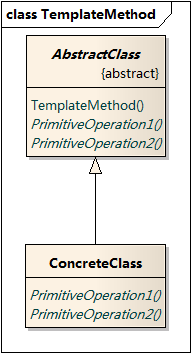
- ConcreteClass实现算法中与特定子类相关的步骤
5.4 优点
- 提供了反向的控制结构。即"好莱坞法则2"："别找我们，我们找你。"——高层组件调用低层组件，低层组件不能调用高层组件。
- 一个模板方法整合了一些原语操作，从而减少了原语操作的数目，简化客户程序调用。
- 客户代码只依赖于模板方法基类，不依赖于具体类，减少整个系统的 依赖 。
5.5 实现
模板方法调用下列类型的操作：
- 具体的操作(ConcreteClass或客户类)
- 具体的AbstractClass的操作
- 抽象操作(必须被重定义)
- Factory Method
- hook operations 提供缺省3的行为，子类在必要时拓展。
重要 ：模板方法应该指明哪些操作是钩子(可被重定义)，哪些操作是抽象操作(必须被重定义)。
细节注意 ：
- C++细节
- 模板方法调用的原语操作(PrimitiveOperation1等)声明为protect
- 抽象操作定义为纯虚函数。
- 模板方法一般就是一个普通的非虚成员函数
- 钩子使用Virtual方法
- 命名约定。可给应被重定义的操作上加一个前缀"Do"，例如："DoCreateDocument"
- 模板方法可以声明为"Sealed"、"final"
钩子使用 钩子实现算法中可选部分
void AbstractClass::TemplateMethod() { Operation1(); Operation2(); Hook1(); if (HookFileExisted()) { Operation3(); } } bool AbstractClass::HookFileExisted() { return true; }
5.6 相关模式
- Factory Method常被模板方法调用。
- Strategy使用委托来改变整个算法，模板方法使用继承来改变算法的一部分。
6 装饰者模式
6.1 概述
动态地给一个对象添加一些额外的职责。提供了比继承更大的灵活4。
6.2 适用性
- 以动态、透明的方式给单个对象添加职责。
- 处理那些可以撤销的职责。
- 不能采用继承进行拓展时。
一种情况：有大量独立的拓展，仅因为这些拓展的组合不同而使得子类数目爆炸性增长。
另一种情况：类定义被隐藏，或者类不可被继承。
6.3 结构
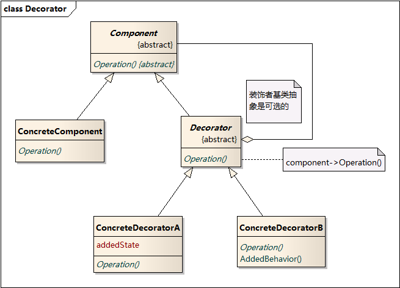
此处的继承为了达到类型匹配的目的，使用户在使用Decorator对象时，与使用Component一样。
6.4 优点
- 比静态继承更灵活，在运行时添加职责。
- 继承在添加一些共通职责时，容易产生类爆炸。Decorator添加的职责大多数情况下能重用。
- 使结构层次较高的类更简洁。不依赖于现有已拓展的Decorator类，定义新类型的Decorator很容易。
6.5 缺点
- 使用装饰时不应该依赖于对象标识。被装饰了的组件与这个组件本身就对象标识而言，是有区别的。
- 产生很多小对象。对于不了解系统的人，难以学习，排错也比较困难。
6.6 实现
- 接口一致性。所有的Component和Decorator必须有一个公共的父类。
- 省略抽象的Decorator类。仅需添加一个职责时，没必要抽象Decorator类。
- 保持Component类的简单性。公共父类仅定义接口，尽量避免添加子类并不需要的职责。
7 单件模式 创建型 对象
7.1 概述
保证类仅有一个实例，并提供该实例的全局访问点。
7.2 适用性
- 当类只能有一个实例
- 当这个唯一实例需要通过子类化扩展
7.3 结构
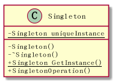
7.4 优点
- 受控访问
- 起到命名空间的作用
对全局变量的一种改进，全局变量会污染名空间(容易重名)。
支持静态类的语言，使用静态类解决该问题更简单。
- 可以被 继承 扩展。
- 也可以拓展单例为 多个实例
允许Singleton类可以管理多个实例（考虑各种池类设计）。
- 比类方法(静态)更灵活
当需要拓展成多个实例时，灵活方便。而静态方法做不到。
7.5 实现
class Singleton { public: static Singleton* GetInstance(); protected: Singleton() : _instance(NULL);//隐藏的构造函数 private: static Singleton* _instance; }; Singleton* Singleton::GetInstance () { if (_instance == NULL) _instance = new Singleton; return _instance; }
7.5.1 同步问题
为了保证在多线程环境下只创建一个实例，需要对GetInstance方法做同步处理。
简单的方法：直接将GetInstance方法声明为synchronized。
这样的做法有个问题：
我们需要同步的只是GetInstance内部负责创建实例的区块，
对整个函数进行同步，如果函数体内内容较多且外部调用很频繁，
开销会很大。
应该只同步创建实例的区块：
public class Singleton { private static Singleton uniqueInstance; private Singleton() {} public static Singleton GetInstance() { if (uniqueInstance == null) { //判断是否要进入负责创建实例的同步模块 synchronized (Singleton.class) {//仅一个线程执行此区块，确保只创建一个实例。 if (uniqueInstance == null) { uniqueInstance = new Singleton();//对于同步数据，当你的写入依赖于读取的内容的时候，要小心。 } } } return uniqueInstance; } }
7.5.2 继承问题
问题：子类的单件实例化在何处实现？
- 在父类的GetInstance中决定使用哪一个单件子类。
可以传入参数，使用条件语句在运行时期选择适合的子类。
局限在于硬性限定了可能的Singleton子类的集合。
优点：支持多态，运行时指定子类。
- 将GetInstance类从父类中剥出，并将它放入子类。
客户代码通过类名调用GetInstance自行决定使用哪个子类。
编译时决定使用哪个子类，非运行时，不够灵活。
- 使用设定文件(或注册表等)记录单件类。
GetInstance()读取相关配置项，通过映射表找到相对应的单件类。
7.6 与静态类比较
7.6.1 概念上的理解
静态类是单件模式的一种特殊实现方式。
- 静态类更多的用于与特定实例无关的 全局 属性和 全局 方法的分类(起到命名空间的作用)。
- 而单件的概念是确实需要一个实例，而且实例只能有一个。比如：注册表对象，线程池对象。
7.6.2 创建的时机
- 静态类在编译时创建
- 单件模式的类在运行时创建(创建的时机在一定程度上可选)
7.6.3 扩展性
- 静态类不能被继承，也无法继承其他类。(如果该类需要实现一些接口，则不能使用静态类)
- 单件类可以被继承扩展
- 如需要从一个实例变为多个实例，静态类做不到。单件类可以扩展满足要求 更灵活
7.6.4 总结
- 静态类更多地用于对全局方法、全局变量的分类组织。
- 单件模式表示有且仅有一个对象。单件类可以被继承，易于扩展。
当对于是否使用单件模式没把握的时候，使用单件类更好一些。
原因：静态类改成实例类，会改变接口，从而影响所有的客户代码。
7.7 相关模式
经常使用Singleton模式的其他模式：
8 工厂模式
8.1 简单工厂
8.1.1 结构
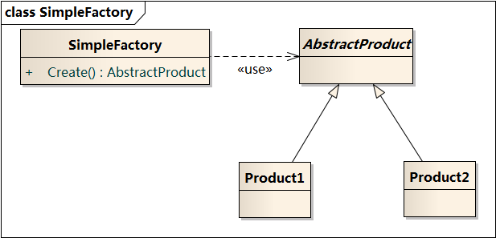
8.1.2 代码示例
public class SimplePizzaFactory { public: Pizza Create(string type); virtual ~SimplePizzaFactory(); }; public Pizza* SimplePizzaFactory::Create(string type) { Pizza* pizza = null; switch (type) { case "cheese": pizza = new CheesePizza(); case "pepperoni": pizza = new Pepperoni(); default: pizza = null; } return pizza; } int main() { SimplePizzaFactory* pFactory = new SimplePizzaFactory(); Pizza* pPizza = pFactory->Create("cheese"); return 0; }
8.2 工厂方法
8.2.1 概述
定义一个用于创建对象的接口，让子类决定实例化哪个类。
8.2.2 适用性
- 当一个类不知道它所必须创建的对象的时候。
- 当一个类希望由它的子类来指定所要创建对象的时候。
- 当类将创建的职责委托给多个子类中的一个，并且希望将指定代理类的过程局部化的时候。
8.2.3 结构

8.2.4 拓展
- 为子类提供hook
用工厂方法在一个类的内部创建对象。提供缺省实现创建。
8.2.5 实现
- 两种情况
- Creator是一个抽象类，且不提供工厂方法的实现。避免了不得不实例化不可预见的类的问题。
- Creator是一个具体类，为工厂方法提供一个缺省的实现。遵循的原则“有一个独立的操作创建对象，子类能重新定义”，保证了灵活性。
- 参数化工厂方法
- 使用模板以避免创建子类
工厂方法一个潜在的问题是它们可能仅为了创建适当的Product对象
而迫使你创建Creator子类，C++中可以提供一个模板子类。
class Creator { public: virtual Product* CreateProduct() = 0; }; template <class TheProduct> class StandardCreator : public Creator { public: virtual Product* CreateProduct(); }; template <class TheProduct> Product* StandardCreator<TheProduct>::CreateProduct() { return new TheProduct; }
客户代码：
StandardCreator<MyProduct> myCreator = new StandardCreator<MyProduct>(); Product* myProduct = myCreator.CreateProduct();
8.2.6 相关模式
- Abstract Factory经常使用工厂方法来实现。
- 工厂方法通常在Template Methods中被调用。模板方法指定一系列的具体步骤，而创建对象的一步委托给工厂方法，以应对变化。
- Prototypes不需要创建Creator的子类。但会要求一个针对Product类的Initialize操作。Creator使用Initialize来初始化对象。
8.3 抽象工厂
8.3.1 概述
提供创建一系列相关或相互依赖对象的接口，而无需指定它们的具体类。
8.3.2 适用性
- 一个系统要独立于它的产品创建、组合和表示时。
- 一个系统要由多个产品系列中的一个来配置时。
- 当你要强调一系列相关的产品对象的设计以便进行联合使用时。
- 当你提供一个产品类库，而只想显示它们的接口而不是实现。
8.3.3 结构

8.3.4 优点
- 通过接口隔离了具体工厂类。 客户代码依赖于抽象工厂接口。产品的类名也在具体工厂的实现中被分离，不出现在客户代码中。
- 使得易于交换产品系列。 通过替换具体的工厂类，来改变产品系列。
- 有利于产品的一致性。 当一系列产品被设计成一起工作时，抽象工厂可以保证一个应用一次只能使用同一系列的对象。
8.3.5 缺点
- 难以支持新种类的产品。 AbstractFactory接口定义了可以被创建的产品集合。支持新的种类，就需要扩展接口，还涉及到所有子类的改变。解决办法
8.3.6 实现
- 将工厂作为单件。一般每个产品系列只需一个ConcreteFactory的实例。
- 创建产品。
AbstractFactory只声明创建产品的接口。由子类实现，一般子类实现时，
使用Factory Method模式。如果有多个可能的产品系列，具体工厂也可以
使用Prototype模式来实现。具体工厂使用产品系列中每一个产品的原型实
例来初始化，且它通过复制它的原型来创建新的产品。基于原型的好处：不
是每个新的产品系列都需要一个新的具体工厂类。5
- 定义可扩展的工厂
加入新产品需要扩展接口，影响子类。
一个更灵活但不太安全的设计是给创建对象的操作增加一个参数。
该参数指定了将被创建的对象的类型。(可以是类标识符、字符串等)
AbstractFactory只需要一个Create操作，用参数指定要创建的产品
类型。更适合于动态类型语言。
当所有对象都有相同的基类，且产品对象可以安全的强转成正确的
类型时。才能在C++这样的静态类型语言中使用。
此方法有个本质的问题，因为返回的都是Object基类，客户无法区分
或对一个产品类别进行安全的假定。需要dynamic_cast去转换，这种
自上向下类型的转换并不总是安全的。
总结：这是一个典型的高度灵活和可扩展接口的权衡问题。
8.3.7 相关模式
- Abstract Factory通常用工厂方法实现，也可用Prototype实现。
- 一个具体的工厂通常是一个单件。
9 命令模式 行为型 对象
9.1 概述
将请求封装成对象，实现统一的Execute()接口，从而可以使用不同的请求
实例对其他对象进行参数化。
典型的例子：
Button控件，对控件设计者来说，只知道Button按下应该会发生
些什么，但具体会发生什么一无所知。只能由使用者来决定。
9.2 适用性
- 回调机制 的一个面向对象的替代品
- 支持对请求排队
- 支持撤销操作
Excute()在实施操作前记录状态，Undo()利用该记录状态取消之前执行的操作。
将执行完的命令对象加入一个历史列表，可通过 向前/向后遍历 实现
一系列的 Undo/Redo 。
- 命令对象支持 持久化
方法：添加Store()和Load()接口
在执行一些列命令前，调用Store()对命令对象进行序列化和持久化操作。
一旦系统崩溃，可以使用Load()复原命令对象，并重新执行。
- 支持事务处理
9.3 结构
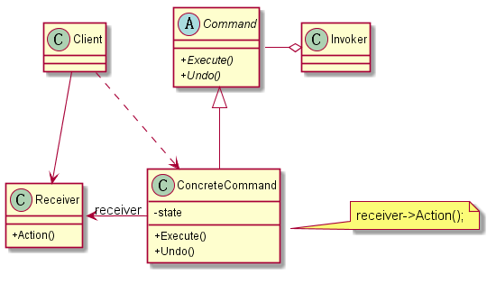
9.4 角色
- Client
负责创建具体命令对象并指定它的接收者。
存储命令对象到某个媒介。
- Invoker 从存储媒介中获取命令对象，并执行。
9.5 优点
- 增加新的Command很容易。
- 将调用命令的对象与知道如何实现该命令相关操作的对象解耦。
- Command对象和其他对象一样支持扩展。
- 支持MacroCommand。复合命令是Composite模式的一个实例。
9.6 实现
- 一个命令对象职责可大可小。
- 最小职责仅确定一个接收者和执行该请求的动作
- 职责也可以大到负责处理所有的功能，不需要接收者，直接包含具体动作。(当没有合适的接收者时使用)
- 实现undo和redo
ConcreteCommand类需要存储额外的状态信息，包括：
- 接收者对象
- 接收者接口执行操作的参数
- 接收者的状态值
- 使用C++模板
好处：避免每一个动作和接收者都创建一个Command子类。
问题：1) 不支持撤销操作 2) 无法向接收者的执行接口传入参数
10 适配器模式 类 对象 结构型
10.1 概述
将一个或多个类的接口转换成用户希望的接口。别名Wrapper。
现有类的接口与用户希望的接口通常是固定的，无法改变。
10.2 结构
10.2.1 类适配器
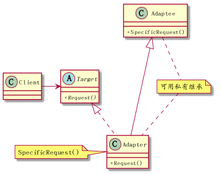
10.2.2 对象适配器
将Adapter与Adaptee之间的继承关系变为了组合。
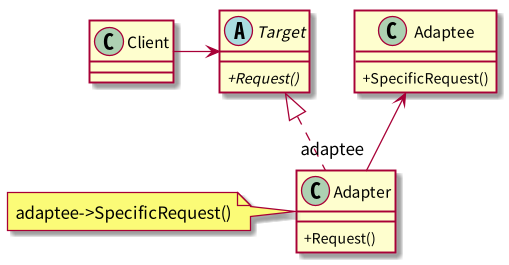
10.3 角色
- Target 定义了满足用户需要的接口
11 代理模式 结构型
11.1 概述
控制和管理访问
11.2 适用性
- 远程代理 代理类隐藏网络层的实现，本地调用代理类就如同调用本地对象一样。
- 虚代理 创建开销很大的对象时使用。代理类隐藏创建的细节。
- 保护代理 用于权限控制。
- 智能指针
11.3 结构
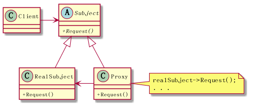
11.4 角色
- Proxy
控制对实体的存取，并可能负责创建和删除实体。
- Subject
定义RealSubject与Proxy的共用接口。
11.5 实现细节
11.5.1 C++重载->,*运算符
Image* ImageProxy::operator-> () { return LoadImage(); } Image& ImageProxy::operator* () { return *LoadImage(); } int main() { ImageProxy imageptr; imageptr->Draw();//此处实际调用的是Image的方法 (*image).Draw(); return 0; }
11.5.2 远程代理
远程代理不一定都是通过网络调用的，不同地址空间的对象访问也是远程代理。
远程代理一般需要将对象、调用信息序列化，通过Socket等协议，通知远程的
服务，然后有远程提供服务的程序，调用实体对象。
Java中有成套的解决方案，叫做RMI。
11.5.3 智能指针
- 对指向实际对象的引用计数，引用计数为0时，自动释放。
- 第一次引用时，装入内存。
- 访问实际对象前，检查被锁定。
标准库的例子：
#include <memory> using namespace std; class A {}; void f() { auto_ptr<A> ptr(new A);//栈区对象，出栈时释放指针，避免多个函数出口都写释放语句 try { //delete a; return; } catch (...) { //delete a; } //delete a; }
11.5.4 虚代理
对于一些开销很大的对象，可能在实际真正用到的时候，才创建对象。
例如：ImageProxy构造中什么都不做，而在Draw的接口中，才真正创建Image对象。
12 外观模式 结构型
12.1 概述
为子系统中的一组接口进行简化，提供一组高级接口，使得子系统更加容易使用。
12.2 适用性
- 为复杂子系统提供一个简单接口，对大部分用户来说足够用，必要时用户一样可以绕过该接口。
- 使客户程序从子系统的各层次实现的细节中解脱出来。
- 多层次结构，可以使用Facade模式定义每一层的抽象操作。可以让各层次之间通过facade进行通信，简化了各层次之间的依赖关系。
12.3 结构
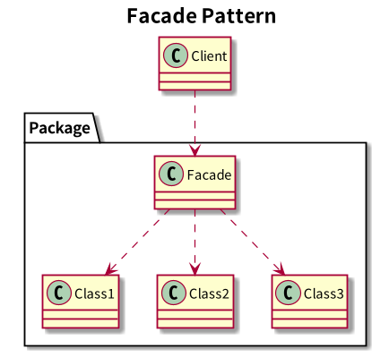
12.4 优点
- 实现了用户与子系统之间的 松耦合 关系
- 对用户屏蔽子系统结构，更易用
12.5 实现细节
- 使用抽象类实现Facade可以进一步降低客户与子系统的耦合度。
- C++使用Namespace可以私有化子系统中的类。
12.6 相关模式
- Abstract Factory模式可与Facade模式一起使用以提供一个单独的创建产品簇的接口。
- Mediator模式与Facade模式的相似之处：都抽象了一些已有的类的功能。但Mediator的目的是对同级之间的任意通讯进行抽象。6
- 通常来说仅需要一个Facade对象，所以Facade类定义成Singleton类。
13 迭代器模式 结构型
13.1 概述
提供遍历集合对象中各元素的方法，并且不将集合具体的数据结构暴露给用户。
13.2 适用性
- 遍历访问集合对象的内容，无需暴露它的内部结构。
- 支持对同一集合对象的多种遍历方式。
- 为遍历不同数据结构的集合对象提供统一的接口(即支持多态迭代）。
13.3 结构
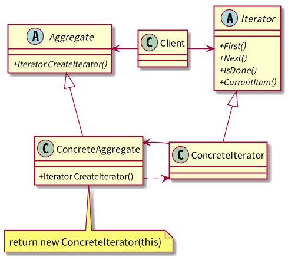
13.4 角色
- Iterator
定义访问和遍历元素的接口
- ConcreteIterator
- 实现Iterator定义的接口
- 在遍历集合时，跟踪当前位置
- Aggregate
定义创建迭代器对象的接口
- ConcreteAggregate
实现Aggregate定义的接口
13.5 优点
- 支持以不同的方式遍历一个集合，使改变遍历算法变的容易。
- 迭代器将遍历的职责从集合类中剥离出来。维护起来更容易。
- 可以同时对一个集合进行多个遍历，只需多个迭代器实例对象。
13.6 实现细节
13.6.1 由谁来控制迭代过程？
13.6.2 谁定义遍历算法？
- 由集合自身定义
由集合自身定义遍历算法。迭代器仅用来指示当前的位置。这种迭代器称为 游标 。
客户调用Next()时，需要将游标作为参数传入，Next操作内部仅改变游标的位置状态。
可改接口为SetCursor(index)和int GetCursor()更容易理解。
- 由迭代器定义
遍历算法还可以由迭代器定义，优势在于，使得在相同的集合上使用不同的迭代算法、
或是在不同的集合上使用相同的迭代算法更简单。
注意：如果遍历算法会用到集合的私有变量，放在迭代器中，则破坏了集合对象的封装性。
13.6.3 线程安全的迭代器
现实情况下，可能有多个不同线程创建的迭代器引用同一个集合对象。
解决同步问题的一般做法是：
各迭代器对象需要向集合对象进行注册(可用Observer模式)，
当改变发生时，集合对象更新每一个迭代器的状态。
13.6.4 关于多态迭代器
- 结构图中所展示的是多态迭代器的实现
也可以不需要迭代器抽象基类，这样在 工厂方法CreateIterator 中
也就不需要动态new出迭代器具体类对象。
- 多态迭代器是有代价的
因为 动态 的分配迭代器对象的本身是有代价的。
一般情况使用分配在栈区上的具体迭代器即可。
- 多态意味着需要用new，也就需要用户负责删除它们，这样容易引发错误。
可以使用Proxy模式，在栈区创建一个代理迭代器对象，在代理迭代器析构中
释放具体迭代器对象。不能用工厂是因为工厂只负责对象的创建。
IteratorProxy::IteratorProxy(Type type) { if (type == Type.Reverse) Iterator* m_iter = new ReverseIterator(); ... } IteratorProxy::~IteratorProxy() { delete m_iter; } int main() { IteratorProxy iter(Type.Reverse); iter.next(); ... return 0; }
- 仅在必须要使用多态时才使用。
13.6.5 迭代器与集合的紧密耦合
迭代器一般作为集合的一个扩展，两者之间是紧密耦合的。
- 利用C++友元实现
C++中迭代器可作为它的集合类的一个友元，
这样集合类中就不必定义一些只有迭代器才用的到的方法。
当然这破坏了集合类的封装性，但这点仅仅是针对迭代器而言的。
问题：
当定义新的ConcreteIterator(为了增加新的遍历方式)时，需要为集合类加上另一个友元。
解决办法：
为避免该问题，集合类可定义迭代器父类为友元，
迭代器子类通过包含一些protected操作，来访问集合类非公共可见成员。
13.6.7 空迭代器
用于处理边界条件。
一个NullIterator的IsDone()总是返回true，或者HasNext()总是返回false。
提示：
空迭代器更多的用于处理树形结构的集合。
叶节点通常需要一个NullIterator。
13.7 相关模式
- 迭代器可在Composite模式这样的递归结构上使用。
- 多态迭代器可以通过Factory Method模式来实例化迭代器子类。
- 迭代器可使用一个memento来捕获一个迭代状态，即迭代器内部存储memento。
14 一些OO提示
14.1 活用空对象来避免null值检查
class Object { public: vitual void DoSomething() = 0; }; class NullObject : public Object { public: void DoSomething(); }; void NullObject::DoSomething() { //do nothing }